# !pip3 install lolviz파이썬 자료구조 시각화
환경설정
파이썬 자료구조 시각화를 위해 lolviz 패키지를 설치한다.
헬로월드
lolviz 패키지 README.md 파일에 기술된 코드를 넣어 제대로 헬로월드를 찍어보자
from lolviz import *
data = ['hi','mom',{3,4},{"parrt":"user"}]
g = listviz(data)
g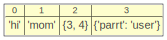
자료구조 시각화
list of lists
import pandas as pd
import numpy as np
# list of lists 생성
list_of_lists = [['Alex', 10], ['Bob', 12], ['Clarke', 13]]
listviz(list_of_lists)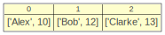
lolviz(list_of_lists)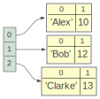
list of dictionaries
list_of_dict = [{'a': 1, 'b': 2}, {'a': 5, 'b': 10, 'c': 20}]
listviz(list_of_dict)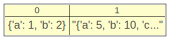
objviz(list_of_dict)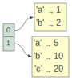
list of dictionaries with data types
# list of dictionary 생성
book = [{'id':1,'name':'python','price':56,'no_of_pages':34},
{'id':2,'name':'Node-js','price':45,'no_of_pages':54},
{'id':3,'name':'R','price':100,'no_of_pages':80},
{'id':4,'name':'Html','price':16,'no_of_pages':20}]
# 컬럼에 대한 자료형 지정
dtypes = {'id': int, 'name': str, 'price': float, 'no_of_pages': int}
# df = pd.DataFrame(book, dtype = {'id': int, 'name': str, 'price': float, 'no_of_pages': int})
# df = pd.DataFrame(book, dtype = [('id', int), ('name', str), ('price', float), ('no_of_pages', int)])
df = pd.DataFrame.from_dict(book, orient='columns').astype(dtypes)
listviz(book)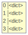
objviz(book)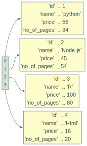
NumPy array
numpy_arr = np.array([[1, 2], [3, 4]])
listviz(numpy_arr)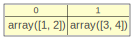
objviz(numpy_arr)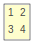
NumPy structured array
# NumPy structured array 생성
np_struct_arr = np.array([(1, 'Alice', 22), (2, 'Bob', 35)], dtype=[('ID', 'i4'), ('Name', 'U10'), ('Age', 'i4')])
listviz(np_struct_arr)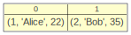
objviz(np_struct_arr)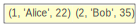
Pandas Series
ps = pd.Series([1, 3, 5, np.nan, 6, 8])
listviz(ps)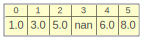
objviz(ps)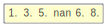
dictionary of Series
# Pandas Series 생성
s1 = pd.Series([1, 3, 5, np.nan, 6, 8])
s2 = pd.Series([4, 7, 5, 2, 3, 6])
# dictionary of Series 생성
dict_series = {'First': s1, 'Second': s2}
listviz(dict_series)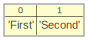
objviz(dict_series)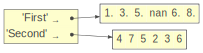
list of tuples
# list of tuple 생성
list_of_tuples = [('Alex', 10), ('Bob', 12), ('Clarke', 13)]
listviz(list_of_tuples)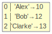
objviz(list_of_tuples)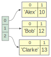
Primitive data structure
Array
import array
prim_array = array.array("i",[3,6,9]) # vs array.array("f",[3,6,9])
listviz(prim_array)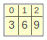
list
prim_list = [1,2,3]
listviz(prim_list)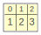
Tuples
prim_tuple = ('a','b','c','d','e')
listviz(prim_tuple)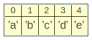
Dictionary
prim_dict = {'하나':1, '둘':2, '셋':3, '넷':4, '다섯':5}
listviz(prim_dict)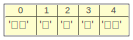
Sets
prim_set = set('abcABC')
listviz(prim_set)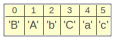
Primitive Data Type
문자열
prim_str = '우리나라'
strviz(prim_str)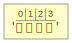